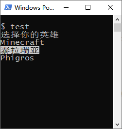

标签：文档 | GameLib
确保您是在 MS-Windows 操作系统下进行操作；我们支持虚拟终端。
克隆仓库到一个文件夹内，此处文件夹以 %GameLib%
为称呼，并进入仓库，新建文件夹 build，使用如下命令构建1。
cmake .. -DCMAKE_BUILD_TYPE=Release # 此处 Release 也可以改为 Debug，具体看项目
make # 或者 mingw32-make构建完后，会在 build\gamelib 产生文件
libgamelib.a。
新建一个 CMake 项目，结构如下所示：
.
| [D] build
| src
| | main.cc
| CMakeLists.txt其中，CMakeLists.txt 内容如下所示：
cmake_minimum_required (VERSION 3.20)
project (project)
# 添加头文件搜索目录
include_directories (%GameLib%/gamelib/include)
# 添加静态库文件搜索目录
link_directories (%GameLib%/build/gamelib)
add_executable (project ./src/main.cc)
# 添加链接选项
target_link_libraries (project gamelib)然后在 build 文件夹下执行 cmake ..
即可。
在 src\main.cc 中编辑：
// 本文件将会使用 GameLib::selector 来获取用户输入选项。
#include <iostream>
#include <gamelib/selector.hxx>
// 设置 Windows 相关结构
HANDLE hOut = GetStdHandle(STD_OUTPUT_HANDLE);
CONSOLE_SCREEN_BUFFER_INFOEX csbi;
CONSOLE_CURSOR_INFO cci;
int main()
{
csbi.cbSize = sizeof csbi; // 必要，初始化 csbi 用
std::cout << "选择你的英雄\n";
auto getOpt = GameLib::selector({ "Minecraft", "泰拉瑞亚",
"Phigros" }, hOut, csbi, cci);
return 0;
}运行效果如图所示：
